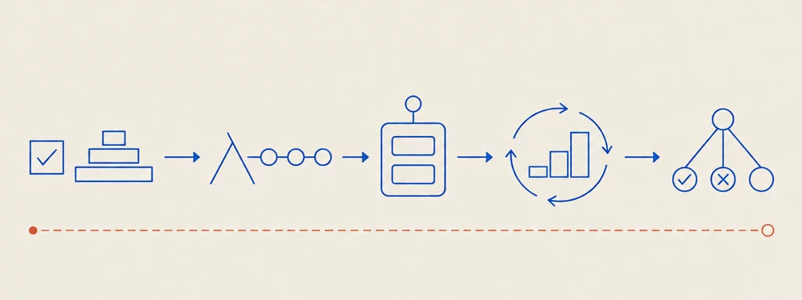

Università di Bologna · Prof. Mirko Viroli · a.y. 2025/2026
Paradigmi di Programmazione e Sviluppo
11 lessons~5 hours of readingexam: project + FP/LP questions

Plate 00 — Quality and tests → functions → objects → process → logic. The road of the course in one figure.
How to study
The lessons follow the order of the course: quality and testing, functional programming, Scala for larger software, process, then logic programming. Each lesson is built from one slide deck (two for Prolog) and opens with the lesson in one paragraph.
The exam is your project, its discussion, and questions on FP and LP concepts. Lessons 2–7 and 9–11 are the concept core; lessons 1 and 8 matter mostly for how you build, test and document the project.
Every code example is shown in full and was compiled or run (Scala 3.3.6, Java 21, tuProlog 4.0.3); the printed outputs are the real ones. Each lesson ends with practice questions under Check your understanding.
Each lesson lists the decks, labs and code it comes from at the bottom. The slides are the official source; these notes are a study aid.